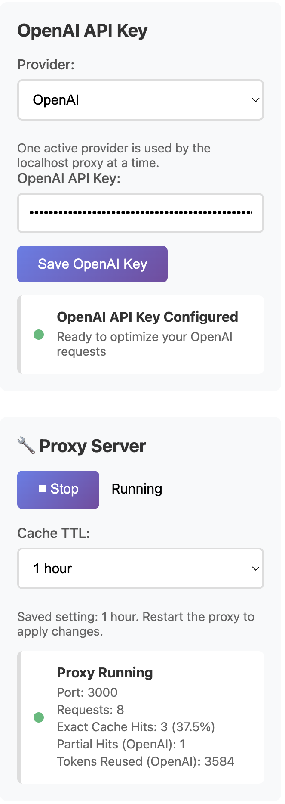

Repeat-heavy scripts
Scripts that check the same thing, summarize the same kind of data, or rerun on a schedule are strong candidates for local caching.
If your scripts, tools, or automations repeat the same request pattern over time, a local proxy can reduce repeated OpenAI API waste without forcing you to redesign the whole stack.
You can cache repeated OpenAI API requests locally by routing your workflow through a localhost proxy. AI Optimizer does this without forcing you to rebuild your existing scripts, tools, or automations, and it works best when the same or very similar requests repeat over time.
This short demo shows AI Optimizer being installed, pointed at a local OpenAI-compatible workflow, and then serving a repeated request from cache with visible proof in the app.
Most waste does not come from one dramatic request. It comes from the same kind of work happening again and again in scripts, agents, cron jobs, and local tools.
Scripts that check the same thing, summarize the same kind of data, or rerun on a schedule are strong candidates for local caching.
Automations often repeat the same structure with only small changes. That makes them a practical place to reduce repeated API spend.
Instead of sending traffic directly to the upstream OpenAI API every time, your workflow points to AI Optimizer on localhost. The optimizer becomes the local control layer that can serve repeated work from cache.
AI Optimizer is a local-first desktop app designed for teams and operators who want cost control without rebuilding existing tools around a new platform. Same workflow shape. Cleaner economics.
Provider caching can be useful, but it comes with provider-specific eligibility rules and reporting constraints. You usually do not control the TTL, and smaller prompts may not qualify the way you want.
AI Optimizer caches exact repeated requests locally, without forcing a minimum prompt-length threshold, and lets you control the TTL directly. That makes it practical for repeat-heavy local workflows that would otherwise fall through provider-side rules.
OPENAI_BASE_URL=http://localhost:3000/v1Local caching is most useful when repetition is real, not theoretical.

The more stable and repeatable the request pattern is, the more useful caching becomes. TTL matters, and so does avoiding unnecessary dynamic content inside repeat requests.
Developers, local tools, internal automations, recurring analysis, and agent workflows are often a much better fit than one-off chat-style exploration.
Install AI Optimizer, route traffic through localhost, and confirm cache-hit behavior before rolling it into the repeat-heavy parts of your stack.